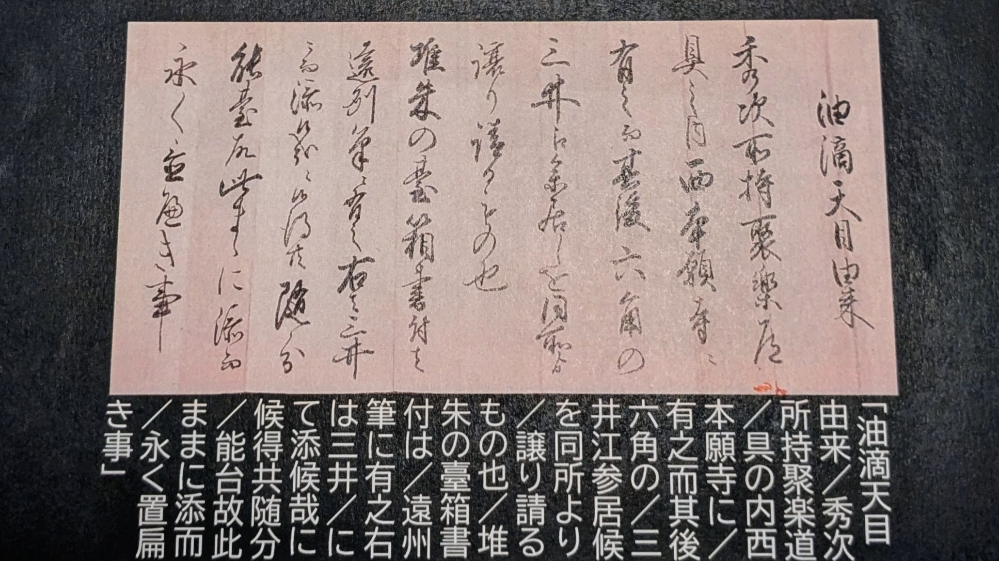

On a mid-August morning in 2026, I sat down with Hitoshi Kobayashi, head curator of the Osaka Municipal Museum of Oriental Ceramics, to talk about the most famous object in the Ataka Collection — a Yuteki tenmoku tea bowl whose museum label names Toyotomi Hidetsugu as a former owner. Kobayashi had lectured on the bowl two years earlier and arrived with a PowerPoint, a stack of documents, and reference books. I came with a list of questions. What followed was less an interview than a masterclass in how far a museum can — and cannot — know its own treasures.
A National Treasure and the Question That Won't Settle
The bowl's history is told by a single document held by the museum, the "Yuteki Tenmoku yurai," or the Provenance of the Oil-Spot Tenmoku Bowl. According to it, the bowl was among the tea utensils owned by Toyotomi Hidetsugu at his Jurakudai palace in Kyoto. It then passed to Nishi Honganji temple, and later into the hands of the Mitsui family of Rokkaku Street, from whom the museum's collector acquired it. The carved red lacquer stand and the box inscription were executed by Kobori Enshu, the legendary early-Edo-period tea master, and the document urges that the exceptional stand be kept with the bowl and preserved together long into the future.
There were originally two such documents, Kobayashi explained, with largely the same content — but one has been lost. Its contents survive in a famous Taishō-era book on tea bowls and tea caddies, so the two can still be compared. He was candid, however, about how much weight the document deserves. Japanese provenance records, he said, often mix story with history; scholars today can neither prove nor disprove this one, a position he described as "non-provable." The museum believes the document is correct, he said, but there is no way to know for sure.

The Provenance Document
「油滴天目 由来」
秀次所持 聚楽道具の内 西本願寺に有之
而其後 六角の三井江参居候を 同所より譲り請るもの也
堆朱の臺 箱書付は遠州筆に有之
右は三井にて添候哉に候得共 隨分能台故 此ままに添而 永く置届き事
Provenance of the Oil Spot Tenmoku Bowl
"Among the tea utensils owned by [Toyotomi] Hidetsugu at Jurakudai, this piece was held at Nishi Honganji Temple. Subsequently, it passed into the hands of the Mitsui family of Rokkaku, from whom it was acquired. The carved red lacquer (tsuishu) bowl stand and the box inscription were executed by [Kobori] Enshu. Although this stand seems to have been added while in the possession of the Mitsui family, it is an exceptionally fine stand; therefore, it shall remain paired with the bowl and preserved together long into the future."
Historical Context & Named Figures
- Toyotomi Hidetsugu (秀次): Hideyoshi's nephew and adopted heir, who held court at the Jurakudai (聚楽第) palace in Kyoto before his execution in 1595.
- Rokkaku Mitsui (六角の三井): The Kyoto branch of the powerful Mitsui merchant family on Rokkaku Street.
- Kobori Enshu (遠州): The legendary early Edo-period tea master, magistrate, and connoisseur (1579–1647). His authentication (hakogaki) on the box significantly elevated the bowl's prestige.
- Tsuishu Stand (堆朱の臺): High-status carved red cinnabar lacquerware stand (tenmoku-dai) tailored to hold precious Chinese Jian ware tea bowls.
Two Bowls, Two Titles
Kobayashi also cleared up a confusion I had carried into the room. There are two famous Yuteki tenmoku bowls, and I had been conflating them. The museum's bowl is a National Treasure — by his account the finest example in the world. The other, an important art object, now sits in the Kyushu National Museum, and it carries a box inscription that may be the work of Sen no Rikyū or of Furuta Oribe. That box is written on; ours, he told me, has no writing at all — which makes its history that much harder to establish.
The Science of the Glaze
Kobayashi's research moves the conversation beyond connoisseurship and into the laboratory. He and his colleagues have been studying their own National Treasure with X-ray fluorescence, examining the glaze, its structure, and the small imperfections of the oil-spot pattern. The work is not yet published — a paper is being prepared for an international journal — but what he could share upends a common assumption. The recipe is not the secret. The glaze and clay, he told me, are essentially the same materials across these celebrated bowls. What separates a Yuteki from a Yōhen, a masterwork from a failure, is firing temperature, the atmosphere inside the kiln, and above all how the piece cools. Iron is the point. The way an object cools in the kiln decides the size of the iron crystallization that forms the pattern — from the fine silvery streaks of Nogime, the "hare's fur" bowls that first made Jian ware famous, to the isolated oil-spots of Yuteki, to the rarest iridescent halo of Yōhen. Asked whether the potters knew what they were doing, Kobayashi suggested that getting a Yōhen at all was close to a happy accident — the special conditions occur so rarely that even within a single massive firing, most of the load failed.
The Historical & Technical Reality (The Dragon Kiln)
Song Dynasty Jian ware was fired in massive, sloping dragon kilns (登窯 / 龍窯) built up hillside slopes in Fujian. A single firing could hold upwards of 100,000 pieces stacked in ceramic containers (saggars):
- Temperature Variations: Flame and heat distribution varied wildly inside a 100-meter-long wood-fired kiln. The middle to upper-middle sections achieved the ideal high temperatures (around 1200–1300°C) and stable reduction atmosphere needed for complex iron-crystal glazes to precipitate out.
- Massive Waste Rate: Over half the kiln load would warp, stick, or fail to form glaze patterns properly.
- Extreme Rarity: While fine Nogime (Hare's Fur) was produced in volume, getting the hyper-precise temperature, cooling rate, and atmospheric fluctuations needed for Yūteki (Oil-Spot)—and especially Yōhen (Iridescent)—was exceptionally rare.
The Meaning of "Yōhen" as a "Happy Accident"
- Kiln Transformation / Kiln Change (窯変 - Yōhen): Originally, the term was written as 窯変 (yōhen), meaning "kiln transformation" or "窯の変異" (accidental change inside the kiln). It described unpredictable, unintentional glaze results that occurred naturally during firing—literally a "happy accident."
- Poetic Shift to "曜変" (Iridescent/Radiant Transformation): Because the iridescent blue, purple, and halo-like patterns on these rarest Jian bowls resembled shimmering stars or heavenly bodies, Japanese tea masters swapped the character 窯 (kiln) for 曜 (shimmering light / heavenly body / star).
Thus, Yōhen (曜変) carries both meanings: physically, a rare kiln accident (窯変); aesthetically, a celestial transformation (曜変).
A Gold Rim With a Japanese Touch
The museum's bowl has a gold rim, and I wanted to know where it came from. In Japan this band is called fukurin, Kobayashi explained, and it is essentially a Japanese practice. Chinese tenmoku bowls have mouths so thin they break easily, so Japanese craftsmen bound the lip in a metal band to protect it — gold, silver, or tin, depending on the standing of the owner. Gold was reserved for the emperor and the aristocracy. The Kyushu bowl, he noted, was originally rimmed in silver and only "upgraded" to gold in the Shōwa era. His own scientific study of the museum's rim confirms it is better than ninety percent pure gold. It was applied, he said, not with heat and not with the lacquer of kintsugi, but with animal glue — nikawa — and a thin sheet of gold fitted and burnished over the edge. When our rim was added, nobody knows; the historical record has craftsmen rimming tenmoku from the Kamakura period onward, and his present guess for the museum's bowl is Edo or earlier.
How Fukurin Is Applied
They applied the gold using gold foil/leaf (金箔, kinpaku) or a thin metal sheet shaped over the edge and secured with animal glue (膠, nikawa), rather than dipping or firing paint.
- The Adhesive (Nikawa / 膠): Nikawa is a traditional organic collagen glue made by boiling animal hides or bones. It provides a strong, flexible, natural bond that adheres well to smooth ceramic glaze and metal without damaging or permanently altering the underlying ceramic substrate.
- Forming the Metal Band: Master Japanese goldsmiths or metalcrafters hammered gold (or silver) into an extremely thin sheet, cut it into a narrow strip, and folded it lengthwise. The folded strip was fitted snugly over the ceramic rim (fuchi) of the tea bowl.
- Securing the Rim: The interior and edge were coated with nikawa (or sometimes urushi lacquer blended with nikawa for water resistance). The gold sheet was carefully burnished and crimped directly against the ceramic contour so it hugged the unglazed or thin-glazed mouth tightly without coming loose during use.
Second-Hand Bowls and a Shipwreck
These bowls reached Japan by ship, and not always by design. Kobayashi invoked the Sinan shipwreck: a Yuan-dynasty merchant vessel bound for Hakata, sunk off the coast of Korea around 1323, that carried more than sixty Jian ware tenmoku bowls. The striking detail is that the bowls showed traces of use. They were not new stock — Japanese buyers were importing prized, second-hand Southern Song antiques decades after they were fired. The style of tea they accompanied, Japanese matcha, had already died out in China itself, so these old bowls had lost their market at home. High-grade Yuteki and Yōhen, however, were never a normal export product. The appetite for old things, I offered, is a habit with a long local pedigree — not unlike the hunt for Shōwa-era plates at Shitennō-ji.
Historical & Contextual Breakdown
Kobayashi-san is referring to the famous Sinan Shipwreck (新安沈船, Sinan chinsen), a Chinese Yuan Dynasty merchant ship discovered off the coast of Sinan, South Korea, in 1976. Bound for Hakata (Fukuoka, Japan) around 1323, it carried a massive cargo of ceramics, including dozens of Jian ware (建窯) Tenmoku bowls. The bowls themselves were fired roughly half a century earlier, during the Southern Song Dynasty, so they were already decades old when they went aboard.
- "Not thin" → Not new / Used / Antique: The bowls showed traces of wear/use ("trace of using"), proving that Japanese monks or traders were importing second-hand or prized antique Southern Song Jian wares (Jianzhan) during the Yuan era, rather than just brand-new factory items.
Ten Bowls From the Yongle Emperor
So how did the very best examples cross the sea? Kobayashi pointed to documents preserved at Tenryūji temple concerning Ming-dynasty trade. The Yongle Emperor, the third emperor of the Ming, presented ten Jian ware tenmoku bowls to the man the Ming court addressed as "King of Japan" — Ashikaga Yoshimitsu. These were diplomatic gifts, the fifteenth-century equivalent of the bronze mirrors that sealed the relationship between Himiko and the Chinese court a millennium and a half earlier. Ten bowls was a very important count, Kobayashi stressed; this was not a normal consignment, and the gift may even have included a Yōhen.
Eiraku-tei (永楽帝 / Yongle Emperor)
In this passage Kobayashi-san is describing the Ming dynasty court's relations with Japan under Ashikaga Yoshimitsu.
- Eiraku-tei (永楽帝 / Yongle Emperor): The 3rd Emperor of the Ming Dynasty (reigned 1402–1424). In Japanese, Chinese reign names are given the suffix -tei (帝 / Emperor).
- "Yora Emperor" → Yongle Emperor: Pronounced Yǒnglè in Pinyin.
- "Japanese king" → Nihon Kokuō (日本国王 / King of Japan): In formal Chinese tribute documents (Kangō Bōeki / 勘合貿易), the Ming court never addressed Japanese rulers as "Emperor" (a title reserved for the Chinese Emperor). Instead, they issued imperial patents addressing the Shogun as the "King of Japan" (日本国王).
- Ashikaga Yoshimitsu (足利義満): The 3rd Shogun of the Muromachi Shogunate. In 1401–1402 he established formal diplomatic ties with Ming China and accepted the title "King of Japan" to secure exclusive trade rights (Tenryūji-bune / Tally Trade).
Honesty About Provenance
The limits of evidence ran like a current through our conversation. The museum's own provenance record, I learned, makes no reference to Hidetsugu at all; it is a later document, and there is no evidence whatsoever that the bowl was seized from Jurakudai after his fall. That story rests on the document and nothing else. Kobayashi was admirably blunt: the bowl could conceivably be something else entirely. But he also allowed for hope — documents have a way of surfacing. He recalled how a renewal of interest in Osaka Castle in the 1950s and 1960s brought old maps out of drawers and attics. New evidence, he said, is always possible.
Collecting as Power
I asked whether the samurai love of tea was really the Zen story it is usually told as — warriors drawn to a practice of living in the present. Kobayashi steered me back to an older and more material explanation. The Muromachi shoguns and the emperors before them had already been using art objects, above all imported Chinese pieces, to display power — the same impulse, he suggested, that drove twentieth-century Americans to import the finest things they could buy. Fine ceramics were a physical store of value, as liquid as gold, able to be exchanged, lent, or deployed. Collecting as politics did not begin with Oda Nobunaga, though he made it spectacularly popular; it was already an established instrument of rule. The Muromachi shogunate even left us the price list. The Kundaikan Sōchōki, the catalog compiled for Shogun Ashikaga Yoshimasa, ranks Yōhen at 10,000 kan and Yuteki at 5,000 — half the value — and uses the unit biki for its tea caddies.
Kundaikan Sōchōki (君台観左右帳記)
A seminal 15th-century art catalog, room display manual, and ranking registry compiled by the Dōbōshū (cultural advisors/curators) Nōami (能阿弥) and his grandson Sōami (相阿弥) for the Ashikaga Shogunate — specifically Shogun Ashikaga Yoshimasa.
Why it matters: It is the single most important historical document for understanding how Chinese luxury ceramics (Karamono) were classified, evaluated, and displayed in Muromachi-period Japan.
Historical values in the Kundaikan Sōchō: The exact historical pricing entries are recorded as:
- Yōhen (曜変): 10,000 Kan / 萬貫 (Man-kan). Described as a priceless treasure — "This bowl is divine; its value is 10,000 kan".
- Yūteki (油滴): 5,000 Kan / 五千貫 (Gosen-kan). Listed explicitly as half the value of Yōhen (5,000 kan).
Kobayashi-san also used the term biki (疋 / ひき), the traditional counting unit for tea caddies (chasuki) in the Kundaikan Sōchō's price records.
Those prices make sense only against the measure of what a kan could buy — and the economy behind it all was rice. It was a reminder, in Kobayashi's hands, of how deeply the value of a bowl was bound to the value of grain.
How Rice Functioned as Money
The Official Currency Unit: The Koku (石): Wealth was not measured in gold or silver coins, but in Koku (石). One koku was defined as the amount of rice needed to feed one adult for an entire year (roughly 180 liters or 150 kilograms / 330 pounds of rice).
Samurai Salaries & Domain Budgets (Kokudaka System): Under the Tokugawa Shogunate (Edo period), a feudal lord's status and domain size were measured strictly by agricultural productivity (Kokudaka / 石高). A daimyō was defined as a lord controlling a domain producing at least 10,000 koku. Samurai were paid directly in rice (or rice stipend vouchers). A samurai receiving a stipend of 50 koku was receiving enough physical rice to feed his household and retainers for the year.
Rice Warehouses & Paper Money in Osaka (Kurayashiki): Because samurai needed cash to buy clothes, arms, and household goods, daimyō shipped their domain's surplus rice to Osaka — the economic kitchen of Japan (Tenka no Kitchin / 天下の台所). In Osaka's Dōjima Rice Exchange (堂島米会所), rice was stored in giant domain warehouses (kurayashiki). Merchants issued paper receipts called Kura-tsukai or Kome-tegata (米手形 / Rice Bills), which circulated as Japan's first paper currency and hosted the world's first formal futures market.
After the Siege of Osaka
When Osaka Castle fell in the summer siege of 1615 and the keep burned, the Tokugawa sent lacquer-painting experts into the ruins specifically to search for tea bowls and tea sets. Much of what they found had been shattered in the fire. Kobayashi told me of father-and-son craftsmen who gathered the broken pieces of tea caddies and put them back together; modern CT scans still show where the repairs were made. Two such caddies are today housed at Seikadō Bunko in Tokyo. Blades fared no better and were prized more: Hideyoshi's Ichigo Hitofuri, Hideyori's Namazuo, and the Honebami — all recovered burned from the main keep and re-tempered by Echizen Yasutsugu for the shogun.
Key Recovered Blades from Osaka Castle (1615)
After the fall of Osaka Castle in the summer of 1615, the Tokugawa forces recovered a number of famous blades from the ruins — including several Toyotomi treasures burned in the main keep.
- Ichigo Hitofuri (一期一振): Forged by Awataguchi Yoshimitsu (栗田口吉光). Toyotomi Hideyoshi's prized masterpiece — originally a long tachi, shortened for Hideyoshi. Recovered burned; re-tempered (Yaki-naoshi) by Echizen Yasutsugu (越前康継) for Ieyasu.
- Honebami Tōshirō (骨喰藤四郎): Forged by Awataguchi Yoshimitsu. Originally a naginata, reshaped into a wakizashi/tachi; owned by the Ashikaga, Ōtomo, and Hideyoshi. Recovered undamaged or lightly damaged; later re-tempered after the 1657 Meireki fire.
- Namazuo Tōshirō (鯰尾藤四郎): Forged by Awataguchi Yoshimitsu. A shortened naginata owned by Toyotomi Hideyori. Recovered burned in the main keep; re-tempered by Echizen Yasutsugu.
Who was Awataguchi Yoshimitsu (粟田口吉光)? Active in Kyoto during the mid-to-late Kamakura period (13th century), he is universally regarded as one of the greatest swordsmiths in Japanese history. He was the master artisan of the Awataguchi school and specialized almost exclusively in tantō (daggers) and ko-wakizashi (short swords). In traditional Japanese connoisseurship, he is considered the absolute master of the tantō, celebrated alongside Masamune and Gō no Yoshihiro as one of the "Three Great Swordsmiths" (Tenka Sangan).
Key Characteristics & Significance:
- Aesthetic Mastery (Jigane): Yoshimitsu's steel forging (jigane) is famous for its flawless, dense nashiji-hada (pear-skin texture), featuring extraordinarily clear nie (martensite crystals along the temper line).
- Rarity of Long Blades: He rarely forged full-length tachi or katana. The few that existed — such as Ichigo Hitofuri (一期一振) — were treated as legendary imperial and shogunal treasures. Its name literally means "One Lifetime, One Sword," denoting it as the only long sword he ever forged.
- Toyotomi & Tokugawa Favor: Toyotomi Hideyoshi held an extreme obsession with Yoshimitsu blades, collecting dozens of his tantō and declaring them the ultimate status symbol for daimyō. Because many of these prized heirlooms were stored in Osaka Castle, several were trapped in the 1615 fire and later salvaged and re-tempered by order of Tokugawa Ieyasu.
An Art Museum, Not a Museum
On the question of display, Kobayashi made a careful distinction. The institution is a bijutsukan — an art museum, as its Japanese name 東洋陶磁美術館 declares — and its displays follow from that. Where a general museum (hakubutsukan) uses an object to tell a story, the Osaka Museum of Oriental Ceramics displays ceramics as art, and wants visitors to feel their beauty. Its most distinctive choice is natural light. The bowl was designed to be seen in daylight, and artificial lighting changes its color and reflection; Kobayashi told me many museums — even the National Palace Museum — get this wrong. His team spent two or three years selecting LED lights calibrated as closely as possible to natural light, down to the early-morning quality that tea masters traditionally preferred for viewing. The display case, the writing, and even the color behind the bowl are matched to the glaze. He spoke of the spirit of Ataka, the collector who gave the museum its identity — a quality the Japanese call hinkaku, dignity — and of the duty to show such objects in the best possible way.
The Rescue of the Ataka Collection
The Ataka Collection itself has a rescue story. Ataka Company, the trading house, had Sumitomo Bank as its main bank. When Ataka collapsed into a kind of bankruptcy, Sumitomo did not buy the collection — it came into the bank's hands through the bankruptcy itself, and the bank chose not to sell it. Sumitomo then acted as the museum's onjin, its benefactor: a sum in the region of 150 oku yen was given to Osaka city, in phases over about two years, and the museum building was funded from that money. It was, I observed, a very large gift — and the era's generous tax incentives for such donations played their part.
The Donor Who Paid for the Renovation
Kobayashi also corrected a stray assumption of mine about the building. The museum has been renewed in phases — closed for two years, reopened briefly, closed again — deliberately, so that it is never shut for too long, and because the budget arrives in slices. The latest two-year renovation, he told me, was funded not by Osaka city but by a donor: the Korean collector Lee Byeong-chang, whose Tokyo house and collection were sold at a very high price after his death. The proceeds funded Korean ceramics research and paid for the renovation two years ago.
The Moon Jar & the Donor
The Moon Jar (月壺 / dal hangari) is an iconic Joseon-dynasty white porcelain jar, prized for its milky white glaze and slightly imperfect, hand-built spherical form — one of the most celebrated shapes in Korean ceramics. The "donator" Kobayashi-san refers to is Lee Byeong-chang (李秉昌), a Korean collector in Japan whose donations helped fund the museum's renovation and form a core of its Korean ceramic collection.
A Novelist's Take on the Museum
The conversation turned, unexpectedly, to fiction. Kobayashi mentioned that a famous writer had interviewed the museum — Shogo Imamura, one of Japan's premier historical novelists, whose essays combine imagination with serious research. His work is a reminder that the historian's and the novelist's disciplines can meet in a place like this one.
Shogo Imamura (今村翔吾)
One of Japan's premier contemporary authors of historical and samurai fiction (rekishi/jidaigeki shōsetsu), celebrated for his high-octane action, deep focus on feudal craftsmanship, and fresh takes on Sengoku-era historical figures.
Fast Facts & Career Highlights:
- Naoki Prize Winner (2021): Awarded Japan's highest literary honor for Saiō no Ten (塞王の楯), a novel detailing the tactical clash between master castle stonemasons and gunsmiths during the Siege of Otsu Castle (1600).
- Netflix Adaptation — Ikusagami (戦神 / Last Samurai Standing): His action-packed Meiji-era battle royale novel Ikusagami was adapted into a major global Netflix live-action series starring Junichi Okada. Set in 1878, it follows 292 skilled warriors competing in a deadly, code-governed survival game across Japan for a 100-billion-yen prize.
Key Major Works:
- Saiō no Ten (塞王の楯): Castle stone-wall siege craftsmanship.
- Jinkan (じんかん): Re-evaluating Sengoku warlord Matsunaga Hisahide and Oda Nobunaga.
- Ushū Borotobi-gumi (羽州ぼろ鳶組): Popular action series on Edo-period firefighters.
Cultural Advocate: Deeply committed to preserving Japanese print culture, he personally bought and revived struggling independent bookstores in Osaka and runs mobile bookshop projects across regional Japan.
The Craft of the Museum Label
The museum label, it turns out, is a discipline of its own. Ours runs to only a few characters — it was cut, Kobayashi said, from 300 to 150, very much like a tweet — in both Japanese and English, and it must stay large enough for an older audience to read. Within those constraints, a curator can only state what is already true: a fact, a technique, or a name. And yet the name on the label is precisely what reaches visitors. I admitted that the name Hidetsugu on the card was what had brought me to the museum in the first place. The tension between the legible label and the qualified truth behind it is, in a sense, the whole subject of this essay. Kobayashi was proud of his displays and clear-eyed about his provenance — a combination that seems to me the definition of curatorial honesty. He also spoke warmly of the traditional classifications — meibutsu, the famous objects of the tea world, and the formal register of National Treasures and Important Cultural Properties — still used by museums like the Owari Tokugawa collection, and worth keeping.
Kokuhō-jūni (国宝・重文)
Kokuhō-jūn- or Kokuhō-jūni (国宝・重文) — the common Japanese abbreviation for Kokuhō (国宝 / National Treasures) and Jūyō Bunkazai (重要文化財 / Important Cultural Properties).
I left the museum with a different question than the one I had arrived with. I came wanting the label to be true; I left understanding that the weight of provenance is carried honestly when a museum tells you what it cannot prove as clearly as what it can. The Yuteki tenmoku in its case, lit like early morning, does not need the story to be beautiful. But the story is far more interesting now that I know its limits.
Further Reading
For those who want to go deeper, Kobayashi — chief curator of the curatorial department at the museum — has published on these very questions. Two of his papers are available in English translation.
Papers by Hitoshi Kobayashi
Kobayashi-san is the Chief Curator of the Curatorial Department at The Museum of Oriental Ceramics, Osaka. Two of his papers available in English translation:
Frequently Asked Questions
What is a Yuteki Tenmoku tea bowl?
Yuteki Tenmoku (油滴天目 / "Oil-Spot Tenmoku") is a type of Chinese Jian ware tea bowl from Fujian, its near-black glaze covered in silvery oil-spot patterns formed by iron crystals that precipitate as the glaze cools. Japanese tea masters and Zen monks treasured it, and the Kundaikan Sōchōki ranked it second only to the rarest Yōhen bowls.
Where is the Yuteki Tenmoku bowl on display?
The museum's Yuteki Tenmoku bowl — a National Treasure — is displayed at the Osaka Museum of Oriental Ceramics, whose Ataka Collection it belongs to. A second Yōhen Tenmoku (曜変天目), also a National Treasure, is held by the Kyushu National Museum.
Who owned the Yuteki Tenmoku bowl before the Osaka Museum of Oriental Ceramics?
According to the provenance document, the bowl passed from Toyotomi Hidetsugu's tea utensils at Jurakudai to Nishi Honganji Temple, then to the Mitsui merchant family of Rokkaku Street, whose carved red lacquer stand and box inscription by Kobori Enshu accompanied it to the museum.
What is the Kundaikan Sōchōki, and what values does it record?
The Kundaikan Sōchōki (君台観左右帳記) is a 15th-century art catalog and ranking registry compiled by the Dōbōshū advisors Nōami and Sōami for Shogun Ashikaga Yoshimasa. It prices Yōhen at 10,000 kan and Yūteki at 5,000 kan — half the value — the earliest known price ranking for these bowls.
How did Chinese tenmoku bowls reach Japan?
Tenmoku bowls traveled to Japan by ship during the Southern Song and Yuan dynasties, sometimes as diplomatic gifts — such as the ten Jian ware bowls the Yongle Emperor's court presented to Ashikaga Yoshimitsu as "King of Japan" — and at other times via shipwreck, most famously the Sinan wreck of c. 1323.